The Project
Continu is an informal learning platform for small to large companies. Within the web app you can add all of your company's content, create courses (called learning tracks) and manage company events. I was hired to lead the UI and UX design from the ground up, working with users to deliver a great user interface and user experience across four products; Learn, Recuit, Analytics and Onboarding.
My Role
I was hired as the Lead UI/UX designer at Continu in 2014 and spent two and half years working closely with the CEO and Dev team to create web products for Learning, On-Boarding, Recruitment & Analytics for the modern workplace. Our products were used by HR teams at Airbnb, Eventbrite and other large companies. Below is just a smapling of some of the work done over these two years.
The Design Challenges
We faced alot of design challenges as a small team tackling products for the Human Resources market. We really wanted to deliver a user experience as well as user interface that did not exist at the time in the HR space. Starting with the informal learning product called Learn, we explored ways of creating and delivering content to users that would help them engage with the platform.
The Brand and Products
Continu Styleguide and Pattern Library
I recognized early on in the design and development of the application that we needed a pattern library to keep all the assets for the build consistent. Developers needed a guide to refer to when adding certain portions of the app in their environment. Below is one page of the layout of our styleguide and pattern library.
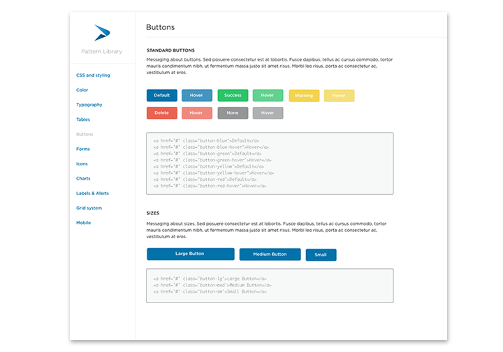Personas
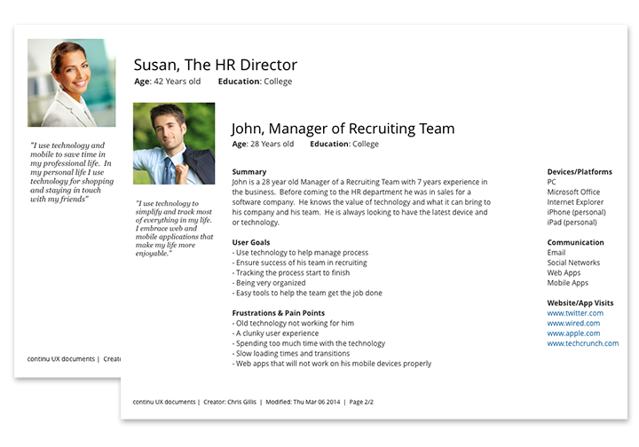Userflows
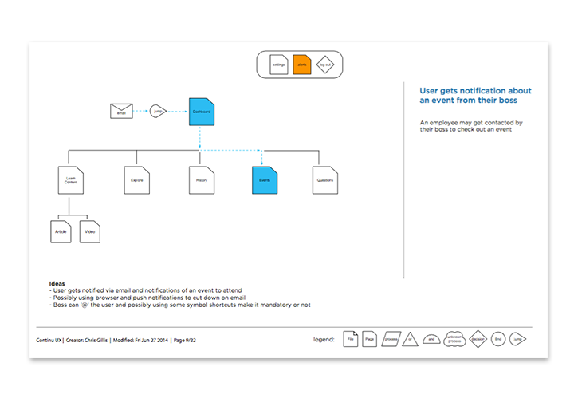Onboarding Flows
An integral part of the success of the application was onboarding users. We wanted the user to understand exactly why they were being brought into this informal learning apllication and also explain some benefits. Below are some userflows and mobile mockups. This application was completely responsive as you will see the following screen designs.
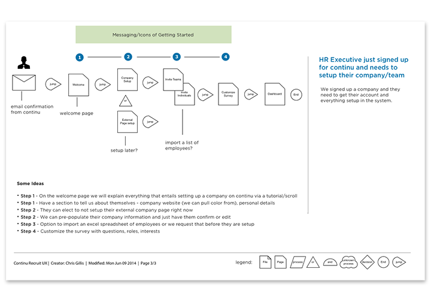Onboarding Mobile Screens
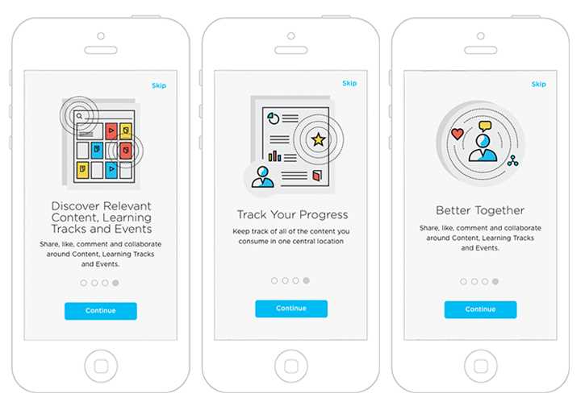Explore
The most important screen within the learn application was a card or masonry layout of all the content available to you on the platform as an employee. That could include Events, Articles, Learning Tracks, and More. Once again we wanted to deliver a unique user experience here that has not existed in the HR space.
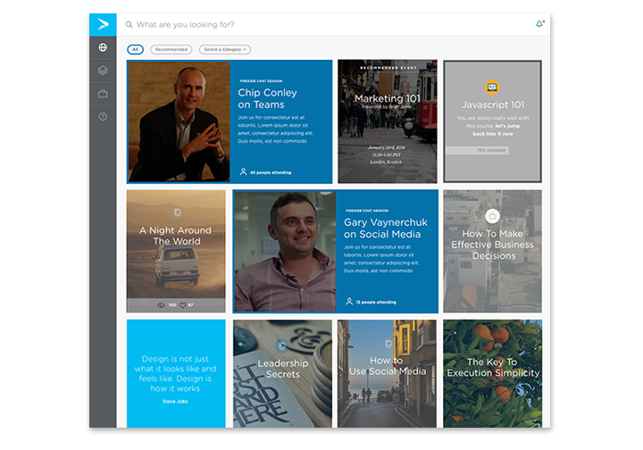Learning Track
Below is an example of how a company might use a learning track to onboard employees directly into their company on their first day. An employer could send a new employee right into this track to learn about the companies policies, goals, branding, etc.
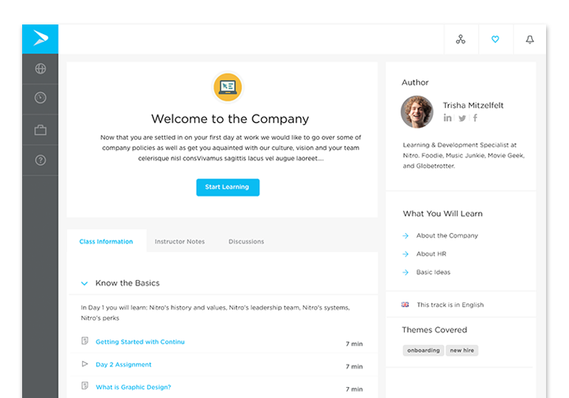Article View
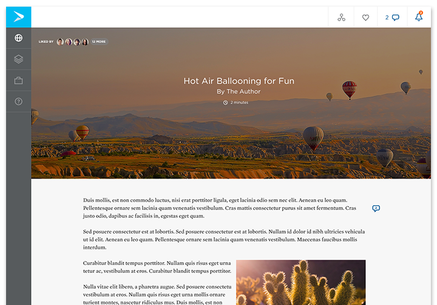User Dashboard
The user can track all of their activity on the application through their user dashboard. Everything was available to the employee from this screen.
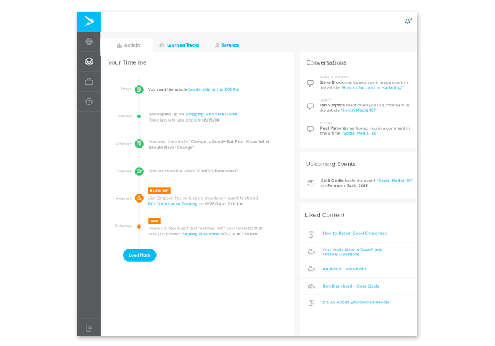Admin Screens
We designed and developed a complete content management system for admins within companies to create content, track analytics on users and publish events. Below is a sampling of some of those screens.
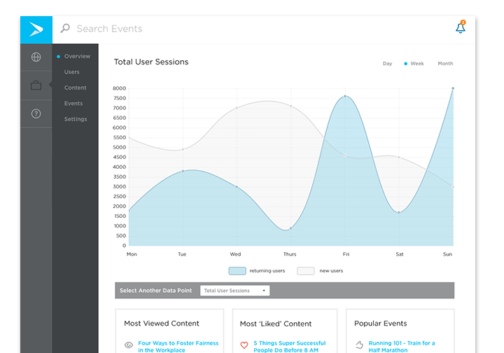Adding an Article
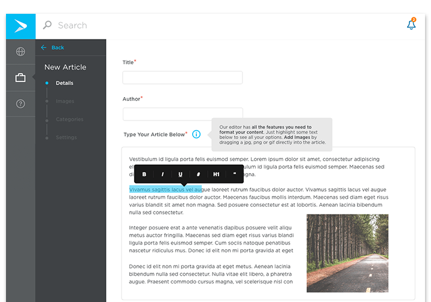Adding Photos to Explore
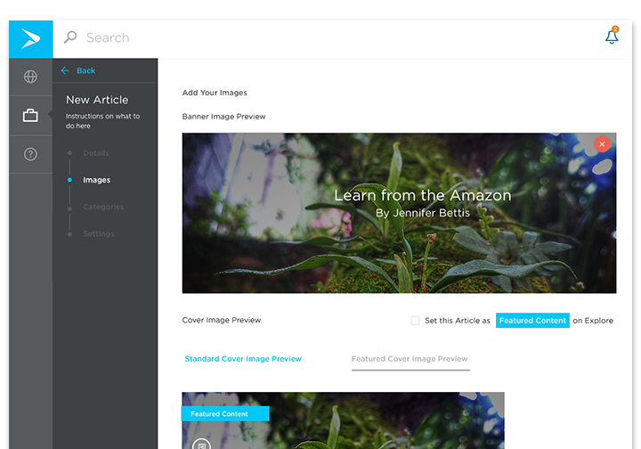Marketing Website
While at Continu we tackled a couple iterations of the marketing website. You can view the current website here (which is still my original design work)
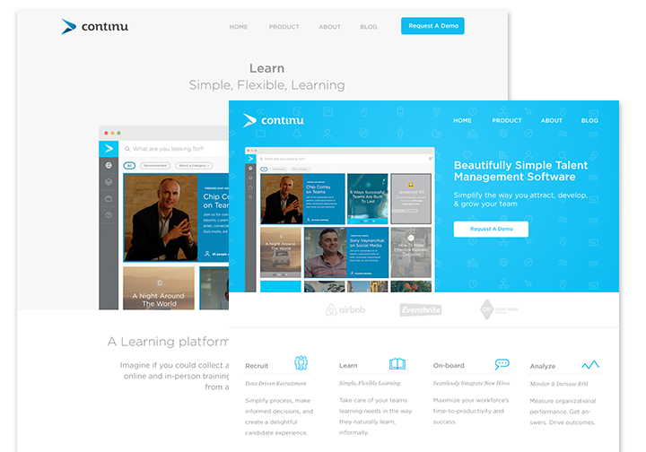Moodboard for Website
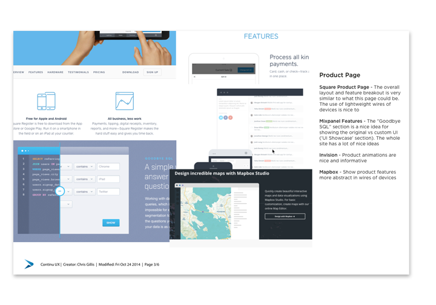Back to Top
© 2018 Chris Gillis Design All Rights Reserved.